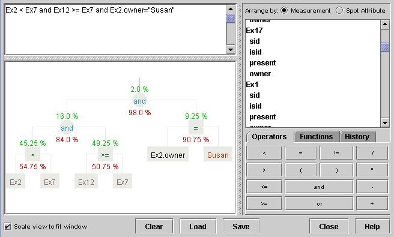

The Math Filter uses mathematical inequalites to filter the spots.
Example filters:
(assuming there are Measurements called M100,
M101 and M102).
| Filter Rule... | ...Displays |
| M100 > M101 | spots in which the value in M100 is greater than the value in M101. |
|
|
spots in which the value in M100 is greater than five times the value in M101. |
|
|
spots in which the value in M101 is positive and the value in M102 is negative. |
|
|
spots in which the value of the SpotAttribute "Source" in Measurement M101 is "Fred". |
As with all filter plugins, Closing the plugin's window deactives the filter (but iconifying it does not).

The interface is divided into four areas:
| Top-left | A text entry area where the rule is displayed and can be edited. |
| Bottom-left | A panel showing a graphical representation of the current filter rule. The graph can be scaled to fit into the available space. The plugin's window can be resized to make more room for the graph. |
| Top-right | A list of available Measurement names, and the names of any Spot Attributes linked to these Measurements. The list can be arranged either my Measurement (in which case Spot Attributes are listed after each Measurement) or by Spot Attribute (in which case the Spot Attributes are grouped together by name). Clicking on any name in this list will insert the corresponding text into the rule. |
| Bottom-right | Palettes for entering mathematical operators and functions and a history list in which you can store commonly used filtering rules. |
The percentage of spots which are trapped by each term in the rule is continuously displayed. The figure in green above each node shows the percentage of spots that pass through the node. The figure in red (below each node) is the percentage of spots that are trapped by this term of the rule. Note that the percentages only reflect the filtering that is done by this filter, and do not take into account any filtering being done by other filter plugins that are also active.
The Load and Save buttons allow the rule to be read from and written to a file respectively. The rule is stored in plain text format in the file.
The current rule can be added to history list using the "Add current" button. This rule will then be permanently stored and can be easily retrieved next time the plugin is used. Items can be removed from the history list by selecting them and pressing the "Remove selected" button.
Math Filter supports the following operators:
| and | or | (logical operators, either true or false) |
| < | > | (relational operators, either true or false) |
| <= | >= | |
| = | != | |
| + | - | (arithmetic operators, type dependant) |
| * | / |
The operator != means 'not-equal-to'.
The symbols & or && may be used instead of and and the symbols | or || may be used instead of or.
The above table is order by decreasing precedence. Expressions are
evaluated left-to-right. Parentheses can be used to force precedence,
for example:
a > 1 & b < 1 | c = 1is, by default, interpreted as:
(a > 1 & b < 1) | c = 1but, by the addition of some parentheses, it can be changed to:
a > 1 & (b < 1 | c = 1)
The graphical representation of the filter rule makes it clear how the rule is being interpreted.
Spot Attributes are referred to as MeasurementName.SpotAttrName. The data type of the spot attribute is determined, and the other operand in the term must match this type.
As an example, assume Measurement M102 has two spot attributes, Cy3 Signal (an Integer), Call (a Char). These attributes are referenced like this:
( M102.Call = 'Y' and "M102.Cy3 Signal" < 100 )
String constants are enclosed in "double quotes" and Char constants are enclosed in 'single quotes'. Double and Integer numerical values are specified as expected, and interpreted depending on context.
Measurement or Spot Attribute names which contain white space or characters which mean something to the Math Filter (such as < and >) must be enclosed in double quotes, "like this".
Note: This behaviour is different to that of versions prior to 1.0.4
The special value 'NaN' (not-a-number) is used to represent a value which is unknown or missing.
All comparisions in which a NaN value is tested against any non-NaN value will be false, for example "NaN > 3", "NaN >= -2000", "400 < NaN" and "NaN > NaN" are all false.
NaN values are equal to other NaN values, for example "NaN >= NaN", "NaN <= NaN" and "NaN = NaN" are all true.
NaN values are not equal to any other value, for example "NaN = 1.0" is false.
The special values 'Infinity' and '-Infinity' represent positive and negative infinity respectively.
Infinity values behave like extreme versions of normal values, so Infinity is greater than any other number, and -Infinity is less than any other number.
Magnitude comparisons of NaN values with Infinity values are always false, for example "Infinity < NaN" and "NaN >= -Infinity" are both false. However, equality tests between NaN values with Infinity values behave as normal, so "Infinity = NaN" is false and "-Infinity != NaN" is true.
A complete description of how comparisons with NaN, -Infinity and -Infinity values work can be found here.
A formal description of the grammar, in pseudo-BNF form is:
string : filter